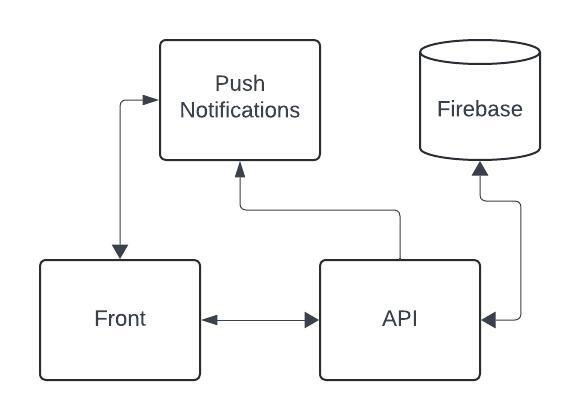

O presente relatório aborda o desenvolvimento de um aplicativo de rede social com funcionalidades para o acesso e utilização de vending machines dentro da FGV. O objetivo principal do projeto é criar uma plataforma que possibilite aos usuários realizar compras em vending machines de forma prática e interativa, combinando a conveniência da automação com os aspectos sociais de uma rede de colaboração, permitindo o compatilhamento de experiências e serviços voluntários de entregas.
Além de resolver o problema proposto, o desenvolvimento deste aplicativo serve como um estudo de caso para a aplicação dos conceitos e práticas de engenharia de software. Ao longo do relatório, iremos descrever o processo de decisão e a experiência utilizando as metodologias propostas em aula, desde o levantamento de requisitos e modelagem do sistema até a implementação e testes.
Os requisitos de arquitetura essenciais para o aplicativo são:
Para atender aos requisitos de desempenho, segurança e manutenibilidade do aplicativo, utilizaremos o Django com Python para o desenvolvimento do backend, aproveitando sua estrutura modular e suporte a componentes reutilizáveis para facilitar a manutenção. O Django permitirá a implementação de uma arquitetura em camadas, onde cada módulo desempenha uma função específica, facilitando futuras modificações e garantindo um desempenho consistente. Para o armazenamento de dados e comunicação em tempo real, utilizaremos o Firebase, que oferecerá suporte escalável para notificações e sincronização de dados, reduzindo a latência nas interações com as vending machines e usuários. A segurança será reforçada por meio da autenticação por token, utilizando bibliotecas como o Django Rest Framework, garantindo que apenas usuários autenticados possam acessar ou modificar os recursos do sistema, protegendo as informações pessoais e transações realizadas.
Uma visão mais detalhada da escolha de arquitetura pode ser vista na figura abaixo:
Durante o desenvolvimento do projeto, buscamos adotar várias práticas do Extreme Programming (XP) para garantir agilidade e qualidade no desenvolvimento do sistema. A seguir, apresentamos as práticas que foram seguidas e aquelas que não foram implementadas, com justificativas para as decisões tomadas.
Embora tenhamos adotado a programação em pares em alguns momentos, não a aplicamos em todas as tarefas devido a limitações de tempo e disponibilidade dos membros da equipe, que tinham horários diferentes para o desenvolvimento. Como resultado, algumas tarefas foram realizadas individualmente para otimizar o progresso do desenvolvimento, especialmente em funcionalidades mais simples ou de menor risco.
Utilizamos TDD para funcionalidades-chave, como a autenticação, login e envio de notificações para os usuários. Escrever os testes antes do desenvolvimento ajudou a agilizar as modificações futuras, permitindo entender de maneira rápida quando as modificações quebravam o código. Para tarefas muito simples, não implementamos testes, como por exemplo, as definições dos modelos de banco de dados no Django.
Por enquanto decidimos por não ter um pipeline de “produção” devido ao estágio inicial do projeto. No futuro pode ser algo a ser aplicado, mas ainda não fazia sentido dado o que tínhamos.
Seguimos a prática de desenvolver incrementos pequenos e frequentes do sistema, com entregas a cada semana. Isso permitiu termos avanços a cada momento, e facilitou a integração das diversas funcionalidades sendo desenvolvidas.
Durante a sprint, percebemos que calculamos de forma equivocada a capacidade da equipe, subestimando o tempo necessário para concluir as tarefas planejadas. Inicialmente, acreditávamos ser possível finalizar 2 requisitos funcionais (RF), mas não levamos em conta imprevistos que surgiriam da utilização de ferramentas não conhecidas pela equipe. Como resultado, só conseguimos concluir um dos RF planejados, enquanto o outro ficou incompleto, evidenciando a necessidade de melhorar nossas estimativas e considerar margens para imprevistos nas próximas sprints.